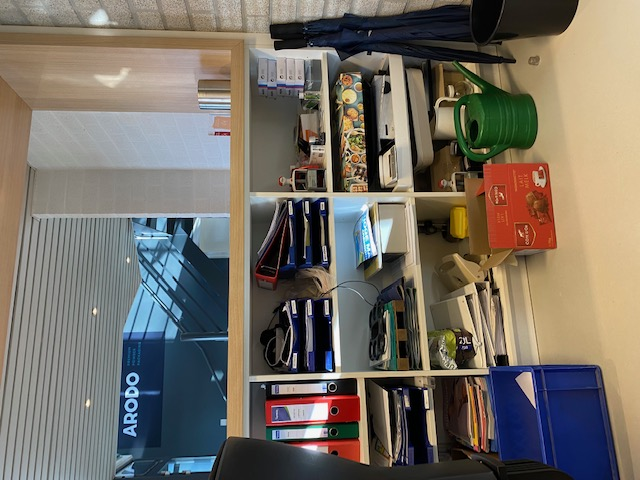

Dagverslag 2: Dinsdag 17/01
Begintijd: 8:30 Eindtijd: 16:15 Pauzes: 9:45 tot 10:00, 12:00 tot 12:30, 14:45 tot 15:00
Vandaag ben ik ontvangen door Michel, hij heeft mij uitgelegd wat serviceorders zijn en hoe je deze boekt. Ik heb geleerd dat mijn stagebedrijf twee soorten orders heeft, namelijk serviceorders en termijnorders. Daarnaast heeft Michel mij opnieuw laten zien hoe banken bijgeboekt moeten worden. Ik vond het fijn om dit nog eens op te frissen omdat het gisteren een stressvolle dag was. Na de pauze heb ik Dienie ontmoet, zij heeft mij getoond hoe een verkoopfactuur verstuurd wordt. Omdat mijn stagebedrijf ook de boekhouding doet voor hun vennootschap in het Verenigd Koninkrijk, heeft Dienie mij uitgelegd hoe zij verkoopfacturen in de boekhouding van Arodo UK zet. Na haar uitleg heb ik dit zelf mogen proberen, dit ging goed. Na de middagpauze heeft Dienie uitgelegd wat een aanmaning is en hoe dit in mijn stagebedrijf wordt gedaan. Mijn tweede dag verliep rustig en ik voelde me minder gestrest dan gisteren. Het was een leerzame dag, maar ik zou nog graag willen leren hoe het inkoopproces in mijn stagebedrijf werkt.
Leerpunt van de dag: Ik wil leren meer vragen te durven stellen.
Mijn dag in één woord: Interessant
Foto:
